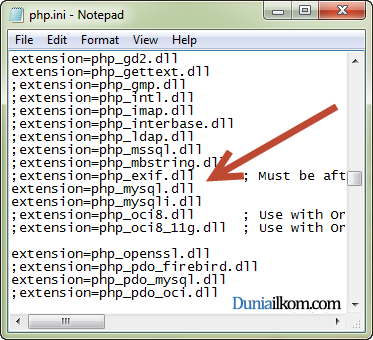
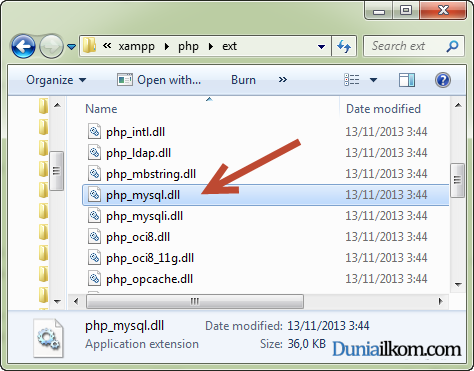
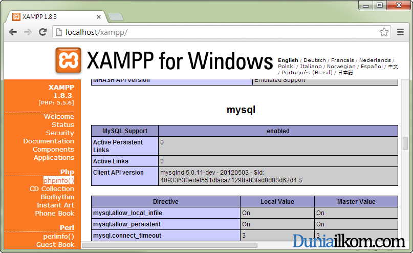

Jika anda mengistall PHP melalui XAMPP, maka mysql extension telah aktif secara default dan anda tidak perlu melakukan apa-apa. Namun jika anda menginstall PHP secara terpisah, kita harus mengaktifkan setingan PHP agar mendukung MySQL. Dalam tutorial kali ini kita akan membahas tentang pengertian extension dalam PHP dan cara setting mysql extension.
Sampai dengan tutorial kali ini, beberapa kali saya menggunakan istilah extension. Namun apakah yang dimaksud dengan extension ini?
Extension di dalam PHP adalah istilah yang merujuk kepada kumpulan fungsi program tambahan yang membuat PHP dapat mendukung berbagai fitur baru.
PHP terdiri dari aplikasi inti (PHP core), dan fungsi tambahan (extension). Dalam aplikasi inti PHP, PHP tidak menyediakan fungsi yang menangani database MySQL. Penanganan untuk fungsi database ini dipisahkan menjadi fungsi tambahan (extension). Selain database, extension dalam PHP menyediakan berbagai fungsi lainnya untuk keperluan yang lebih khusus, seperti pembuatan gambar, kriptografi, penanganan email, pembuatan PDF, dan lain-lain.
Untuk mengaktifkan extension dalam PHP, bisa dilakukan dari file setingan php.ini (cara membuka file php.ini telah kita pelajari pada tutorial Cara Mengubah File Konfigurasi PHP (php.ini)), lalu cari extension=php_mysql.dll dan extension=php_mysqli.dll, pastikan menghapus tanda titik koma di awal kedua extension ini untuk mengaktifkannya.

Masih pada file php.ini, pada bagian ini anda dapat melihat berbagai extension yang terdapat di dalam PHP, bahkan sebahagian besar tidak aktif secara default.
File settingan php.ini menginstruksikan kepada PHP untuk mengaktifkan suatu extension, namun file extension itu sendiri juga harus ada di dalam PHP. Anda bisa membuka folder xampp\php\ext untuk melihat file-file extension yang digunakan untuk menambah fitur PHP.

Untuk memeriksa apakah setingan extension=php_mysql.dll sudah aktif, kita bisa menggunakan fungsi phpinfo(). Anda bisa menjalankan fungsi phpinfo() didalam sebuah file php, atau bisa juga dengan men-klik menu phpinfo() dari halaman localhost dari XAMPP. Dalam halaman phpinfo(), carilah bagian mysql seperti tampilan berikut:

Jika anda menemukan bagian mysql, berarti extension mysql telah aktif dan kita bisa mulaI membuat program untuk mengakses database melalui PHP.
Dalam tutorial belajar PHP MySQL berikutnya, kita akan mulai membuat kode program PHP agar bisa terhubung dengan MySQL dalam tutorial Cara Membuat Koneksi PHP-MySQL dengan fungsi mysql_connect.